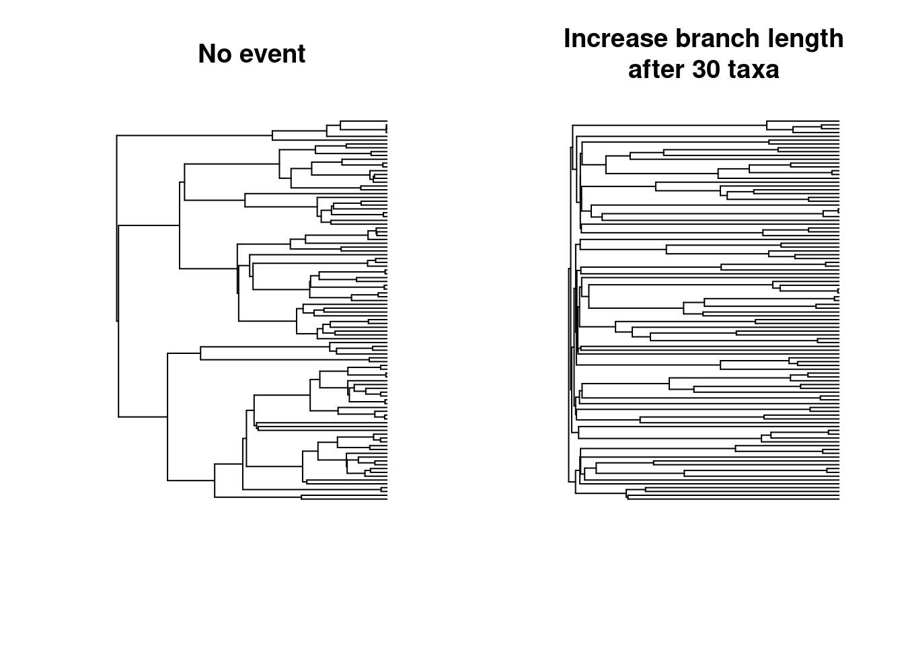

11 Changing branch length when reaching n taxa
For this scenario, we want to generate a pure birth tree until reaching 100 taxa. After reaching 30 taxa we want branch length growth to increase 50 folds.
First we need to set up the simulation parameters: * The stopping rule (100 taxa) * The birth-death parameters (speciation rate of 1)
## Set the parameters
stop_taxa_100<- list(max.taxa = 100)
speciation_1 <- make.bd.params(speciation = 1)Then a modifier that is the default birth-death algorithm rules
## Birth death rules (default)
default_modifiers <- make.modifiers()And event which triggers after reaching 30 taxa (taxa.condition(30)), targets the "modifiers" and modifies the branch length generation rule to a 50 fold increase (increase.50.folds)
## Multiplying branch length 50 folds
increase.50.folds <- function(x, trait.values, lineage) {
return(x * 50)
}
## Event for increasing branch length after reaching 30 taxa
increase_brlen <- make.events(
condition = taxa.condition(30),
target = "modifiers",
modification = update.modifiers(
branch.length = branch.length,
modify = increase.50.folds))Once these parameters are defined, we can run the simulations and plot the results. We can contrast the results with the scenario without an event (but same random seed):
## Run the simulations
set.seed(5)
no_event <- dads(stop.rule = stop_taxa_100,
bd.params = speciation_1,
modifiers = default_modifiers)
set.seed(5)
increased_brlen <- dads(stop.rule = stop_taxa_100,
bd.params = speciation_1,
modifiers = default_modifiers,
events = increase_brlen)
## Visualise the results
par(mfrow = c(1,2))
plot(no_event, main = "No event", show.tip.label = FALSE)
plot(increased_brlen, main = "Increase branch length\nafter 30 taxa",
show.tip.label = FALSE)
11.1 Founding event: a generating a subtree with no fossils
For this scenario, we want to generate a birth-death tree for 4 time units. After reaching 10 taxa, one random taxa will give birth to a sub-tree that is a pure birth tree (no extinction).
First we need to set up the simulation parameters: * The stopping rule (5 time units) * The birth-death parameters (speciation rate of 1 and extinction of 0.2)
## Set up parameters
stop_time_4 <- list(max.time = 4)
spec_1_ext_02 <- make.bd.params(speciation = 1, extinction = 0.2)And our event which triggers after reaching 10 taxa (taxa.condition(10)), and generates a subtree (“founding”) that is a pure birth tree (no extinction and speciation rate of 2).
## Setting the pure-birth parameters
speciation_2 <- make.bd.params(speciation = 2)
## Events that generate a new process (founding effects)
founding_event <- make.events(
condition = taxa.condition(10),
target = "founding",
modification = founding.event(
bd.params = speciation_2),
additional.args = list(prefix = "founding_"))Note we are prodviding an additional argument
prefixhere so that we can track which species are part of the sub tree for colouring them down the line.
Once these parameters are defined, we can run the simulations and plot the results:
## Simulations
set.seed(11)
founding_tree <- dads(stop.rule = stop_time_4,
bd.params = spec_1_ext_02,
events = founding_event)
## Selecting the edges colours
tip_values <- rep("black", Ntip(founding_tree))
tip_values[grep("founding_", founding_tree$tip.label)] <- "orange"
edge_colors <- match.tip.edge(tip_values, founding_tree, replace.na = "black")
## Plotting the results
plot(founding_tree, show.tip.label = FALSE, edge.color = edge_colors)
11.2 Founding event: a generating a subtree a different process
For this scenario, we want to generate a birth-death tree with a one dimensional Brownian Motion trait for 6 time unit. After a taxa reaches the value 3 or higher, it gives birth to a sub-tree that generates an OU trait with an optimum at the value 3.
First we need to set up the simulation parameters: * The stopping rule (6 time units) * The birth-death parameters (speciation rate of 1 and extinction of 1/3)
## The tree parameters
stop_time_6 <- list(max.time = 6)
speciation_1_extinction_03 <- make.bd.params(speciation = 1,
extinction = 0.3)Then set up our trait which is a one dimensional Brownian Motion
## Trait
simple_bm_trait <- make.traits(n = 1, process = BM.process)When a taxa reaches the value 3 trait.condition, it generates a pure birth tree (speciation = 2) with an OU trait with the optimum value 3.
## The OU trait with an optimum value of 3
OU_3 <- make.traits(process = OU.process,
start = 3, process.args = list(optimum = 3))
## The pure birth parameters
speciation_2 <- make.bd.params(speciation = 2)
## The founding event
new_OU_trait <- make.events(
condition = trait.condition(3, condition = `>=`),
target = "founding",
modification = founding.event(
bd.params = speciation_2,
traits = OU_3))Once these parameters are defined, we can run the simulations and plot the results:
## Simulating the tree
set.seed(1)
founding_tree <- dads(stop.rule = stop_time_6,
bd.params = speciation_1_extinction_03,
traits = simple_bm_trait,
events = new_OU_trait)
plot(founding_tree)